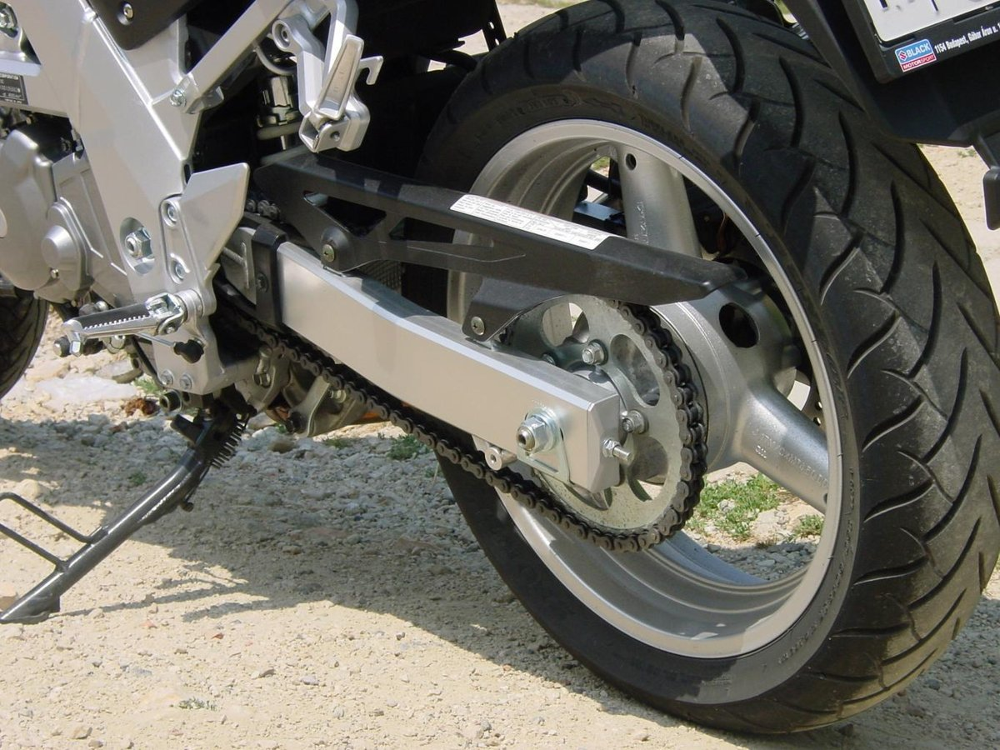
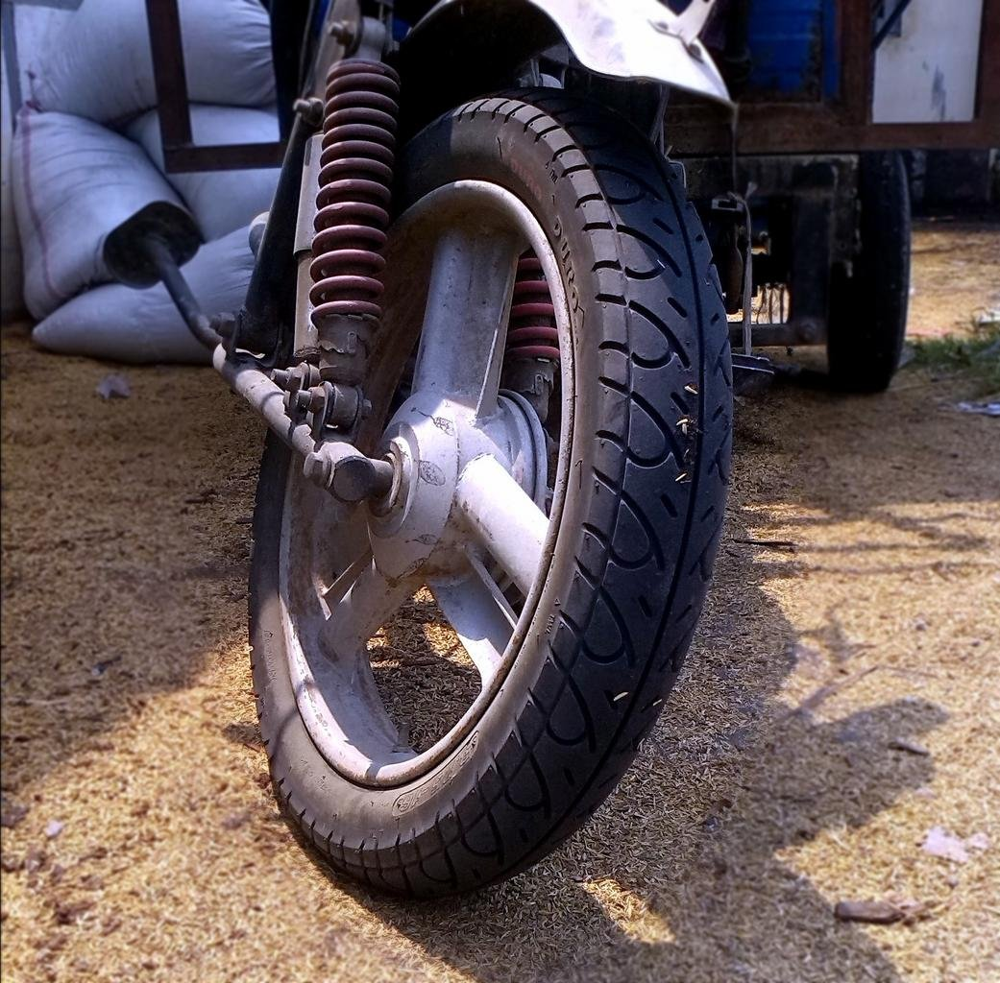
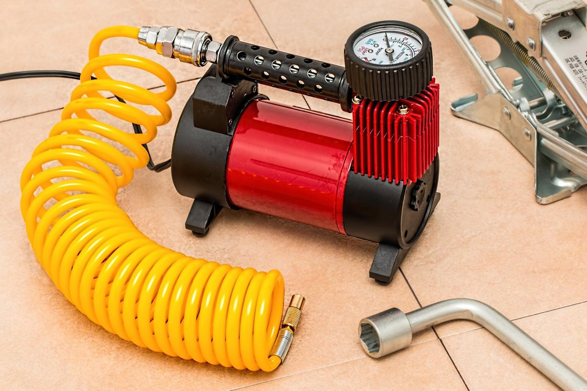

Lốp xe máy mòn: 4 dấu hiệu phải thay ngay và cách bơm đúng áp suất

Lốp xe máy mòn: 4 dấu hiệu phải thay ngay và cách bơm đúng áp suất: lốp là phần duy nhất của xe chạm xuống mặt đường, nên lốp mòn nguy hiểm nhất vào lúc trời mưa — gai lốp cạn không thoát nước kịp, xe dễ trượt khi phanh hoặc ôm cua. Kiểm tra theo 4 dấu hiệu dưới đây: gai mòn tới vạch chỉ thị, hông lốp nứt hoặc phồng, lốp hay xẹp không rõ lý do, và lốp đã quá cũ dù gai còn sâu. Kèm theo đó là việc bơm đúng áp suất ghi trên tem của chính chiếc xe bạn.
Nhiều người chạy xe tới khi lốp trơn bóng, nhìn thấy cả lớp vải bố mới thay, vì nghĩ lốp chưa thủng thì vẫn chạy được. Thật ra lốp mòn không báo trước bằng tiếng động gì — nó chỉ "báo" vào đúng lúc bạn phanh gấp trên đường ướt.
Cảnh báo an toàn trước khi làm gì
Lốp đã phồng cục ở hông, nứt sâu thấy lớp bố, hoặc xẹp hẳn thì không cố chạy tiếp — dắt xe tới tiệm gần nhất hoặc gọi người hỗ trợ, vì lốp có thể nổ bất cứ lúc nào khi đang chạy. Kiểm tra lốp khi xe đã dựng chân chống giữa trên nền phẳng, máy tắt, lốp nguội. Đừng tự vá, tự tháo lốp nếu bạn không có đồ nghề và kinh nghiệm — vá sai cách còn nguy hiểm hơn để nguyên mang ra tiệm.
1. Gai lốp mòn tới vạch chỉ thị mòn
Xem ở đâu: trong các rãnh gai của lốp có những gờ cao su nhỏ gọi là vạch chỉ thị mòn (thường có ký hiệu tam giác nhỏ trên hông lốp chỉ vào). Dấu hiệu: mặt gai mòn ngang bằng với gờ này là lốp đã tới hạn thay. Lý do: gai cạn thì nước mưa không có rãnh để thoát, lốp trượt trên mặt nước thay vì bám đường. Chạy đường khô có thể chưa thấy khác, nhưng gặp mưa là khác hẳn.

2. Hông lốp nứt, rạn hoặc phồng cục
Xem kỹ hai bên hông lốp dưới ánh sáng: vết nứt rạn chân chim dày đặc, vết cắt sâu, hoặc chỗ phồng lên như cục u đều là dấu hiệu lốp đã yếu kết cấu. Lốp phồng hông không vá được và không bơm căng chạy tiếp được — thay ngay, vì đây là kiểu hỏng dễ nổ lốp nhất khi xe đang chạy nhanh hoặc chở nặng.
3. Lốp hay xẹp hơi dù không cán đinh
Bơm căng rồi vài hôm lại mềm, mà kiểm tra không thấy đinh: có thể van lốp đã lão hóa rò hơi, vành bị móp hoặc rỉ làm hở mép lốp, hoặc lốp có vết nứt nhỏ rò từ từ. Mang ra tiệm ngâm nước kiểm tra một lần cho rõ nguyên nhân — cứ bơm bù mãi vừa hại lốp vừa không biết lúc nào nó xẹp hẳn giữa đường.
4. Lốp đã quá cũ dù gai còn sâu
Xe ít đi, gai còn sâu nhưng cao su lốp vẫn lão hóa theo thời gian: trên hông lốp có dãy số ghi tuần và năm sản xuất (ví dụ 2319 là tuần 23 năm 2019). Lốp khoảng 4 đến 5 năm tuổi trở lên thường đã cứng, giảm bám đường, nhất là khi trời mưa. Sờ vào mặt lốp thấy cứng và trơn khác hẳn lốp mới cũng là một dấu hiệu nên cân nhắc thay.
5. Bơm đúng áp suất: xem tem trên xe, đo khi lốp nguội
Bơm bao nhiêu: xem tem thông số dán trên xe (thường ở gắp sau, cốp hoặc khung gần chân chống) — mỗi dòng xe một mức khác nhau, phổ biến quanh 2,0 đến 2,5 kg/cm² tùy bánh trước sau và có chở người hay không; lấy số trên tem của xe bạn làm chuẩn. Khi nào đo: đo và bơm khi lốp nguội, trước khi chạy, vì lốp nóng làm số đo cao hơn thật. Bơm non hơi làm lốp nhanh mòn hai bên vai, nặng tay lái và hao xăng; bơm quá căng làm mòn giữa mặt lốp và xe nảy, kém bám khi phanh.

Giới hạn cần nhớ
Các dấu hiệu trên là cách tự kiểm tra bằng mắt trong sinh hoạt thường ngày, không thay cho thợ sửa xe kiểm tra vành, van và cân bằng bánh khi cần. Sau khi thay lốp mới, chạy nhẹ nhàng một thời gian đầu vì mặt lốp mới còn lớp bảo vệ hơi trơn. Vá lốp thì chỉ là giải pháp tạm thời với lỗ thủng nhỏ ở mặt gai — thủng hông lốp thì thay, không vá để chạy lâu dài.
Kết lại: cuối tuần này, dựng chân chống giữa, nhìn vào rãnh gai tìm vạch chỉ thị mòn và liếc ngày sản xuất trên hông lốp — hai phút kiểm tra cho biết rõ lốp xe bạn còn an toàn hay đã tới lúc thay.
- Muốn bài viết có thêm người hỏi mua? Xem các gói tăng tương tác tại viettuongtac.com.
- Cần một website bán hàng để khách xem mẫu và đặt hàng dễ hơn? Xem mẫu tại webkhoinguon.com.
💬 Bình luận
Đang tải bình luận…